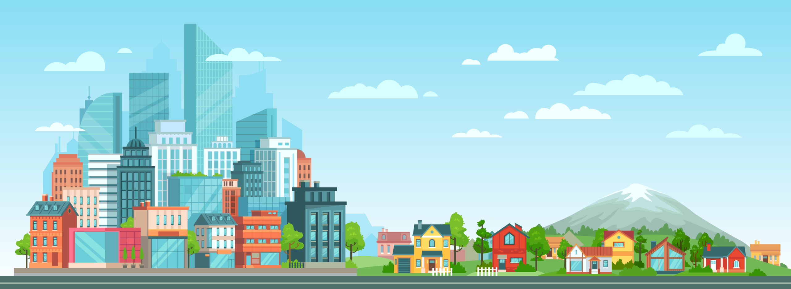

Bem-vindo ao site da Nick!
Neste site, vamo explorar as complexidades da migração do campo para a cidade, discutindo seus impactos sociais, econômicos e culturais.
Explore os diferentes aspectos dessa transição e descubra como ela molda nossas comunidades e sociedades.
